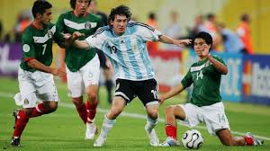

18.ª edición
Celebra la “Copa del Mundo de la Sonrisa”
Copa Mundial de la FIFA Alemania 2006
9 de junio – 9 de julio de 2006
País sede: Alemania 🇩🇪
32 selecciones
64 partidos
Datos generales del torneo
- País sede: Alemania 🇩🇪
- Ciudades sede: Berlín, Múnich, Dortmund, Hamburgo, Frankfurt, Leipzig, Stuttgart, Núremberg, Hannover, Kaiserslautern, Gelsenkirchen, Colonia
- Estadios: 12 recintos (incluyendo Olympiastadion y Allianz Arena)
- Selecciones participantes: 32
- Partidos jugados: 64
- Goles anotados: 147
- Campeón: Italia 🇮🇹
- Subcampeón: Francia 🇫🇷
- Tercer lugar: Alemania 🇩🇪
- Cuarto lugar: Portugal 🇵🇹
- Máximo goleador (Bota de Oro): Miroslav Klose (5 goles)
- Mejor jugador (Balón de Oro): Zinedine Zidane
- Mejor portero (Guante de Oro): Gianluigi Buffon
- Premio Fair Play: Brasil 🇧🇷 y España 🇪🇸
Jugadas y momentos destacados
Italia levantó su cuarto título en un torneo recordado por su nivel táctico, la semifinal épica Alemania–Italia y el famoso cabezazo de Zidane.

Resumen del torneo
- Italia mostró gran solidez defensiva con Cannavaro, Zambrotta y Buffon como figuras.
- Francia renació de la mano de Zidane, llegando a la final tras vencer a España, Brasil y Portugal.
- Alemania protagonizó un torneo espectacular, con Klose como goleador y un fútbol ofensivo.
- El momento más recordado fue el cabezazo de Zidane a Materazzi en la final, su último partido como profesional.
- Italia venció a Francia en penales (5–3) tras un 1–1 en la final de Berlín.
Fase final (últimos 4)
Semifinales
- 🇩🇪 Alemania 0–2 Italia 🇮🇹 (prórroga)
- 🇵🇹 Portugal 0–1 Francia 🇫🇷
Tercer lugar
- 🇩🇪 Alemania 3–1 Portugal 🇵🇹
Final
- 🇮🇹 Italia 1–1 🇫🇷 Francia
Italia gana 5–3 en penales
Selecciones participantes por grupo
Grupo A
- 🇩🇪 Alemania
- 🇨🇷 Costa Rica
- 🇵🇱 Polonia
- 🇪🇨 Ecuador
Grupo B
- 🏴 Inglaterra
- 🇵🇾 Paraguay
- 🇸🇪 Suecia
- 🇹🇹 Trinidad y Tobago
Grupo C
- 🇦🇷 Argentina
- 🇳🇱 Países Bajos
- 🇷🇸 Serbia y Montenegro
- 🇨🇮 Costa de Marfil
Grupo D
- 🇵🇹 Portugal
- 🇲🇽 México
- 🇮🇷 Irán
- 🇦🇴 Angola
Grupo E
- 🇮🇹 Italia
- 🇬🇭 Ghana
- 🇺🇸 Estados Unidos
- 🇨🇿 República Checa
Grupo F
- 🇧🇷 Brasil
- 🇭🇷 Croacia
- 🇦🇺 Australia
- 🇯🇵 Japón
Grupo G
- 🇨🇭 Suiza
- 🇫🇷 Francia
- 🇰🇷 Corea del Sur
- 🇹🇬 Togo
Grupo H
- 🇪🇸 España
- 🇺🇦 Ucrania
- 🇹🇳 Túnez
- 🇸🇦 Arabia Saudita
Final: Italia vs Francia
En el Olympiastadion de Berlín, Italia logró su cuarto título mundial tras empatar 1-1 ante Francia
y vencer en la tanda de penaltis. El partido quedó marcado por la expulsión de Zidane tras su
famoso cabezazo a Materazzi.
Italia 🇮🇹 – Alineación titular
- DT: Marcello Lippi
- Gianluigi Buffon
- Gianluca Zambrotta
- Fabio Cannavaro (C)
- Marco Materazzi
- Fabio Grosso
- Gennaro Gattuso
- Andrea Pirlo
- Simone Perrotta
- Francesco Totti
- Mauro Camoranesi
- Luca Toni
Francia 🇫🇷 – Alineación titular
- DT: Raymond Domenech
- Fabien Barthez
- Willy Sagnol
- Lilian Thuram
- William Gallas
- Eric Abidal
- Claude Makélélé
- Patrick Vieira
- Zinedine Zidane (C)
- Franck Ribéry
- Florent Malouda
- Thierry Henry
Reseña general
Alemania 2006 fue un torneo vibrante y festivo, recordado por su ambiente alegre y por
la sensación de unidad en todo el país. Es considerado uno de los Mundiales mejor organizados.
Italia conquistó su cuarto título con una exhibición defensiva monumental, mientras que Francia
vivió el último baile de Zidane, una de las mayores leyendas del fútbol mundial.